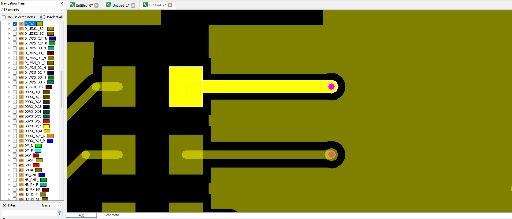
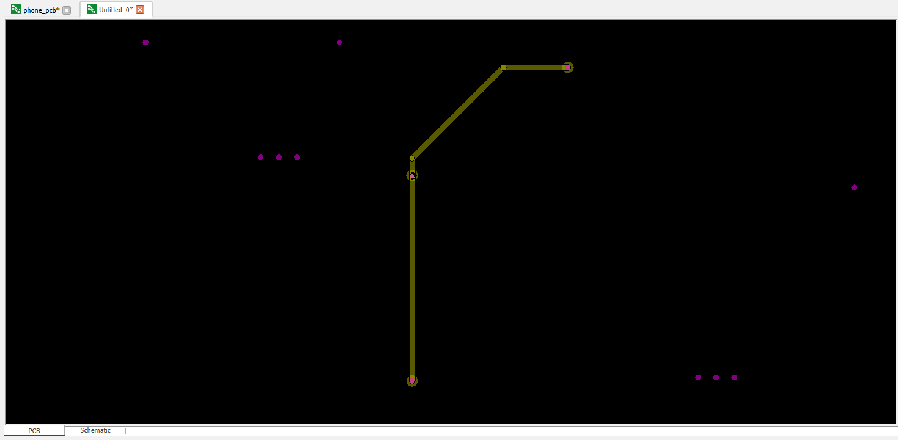
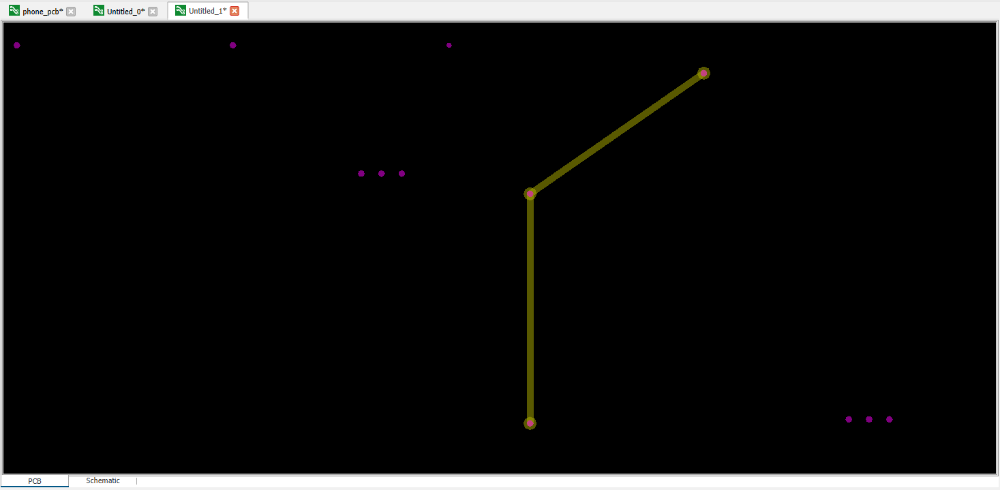

Working with Traces¶
The physical data model of a PCB describes the stackup, materials and geometries. Traces are defined as geometries (GeoItem) of a PCB. Here the Physical data model is described in more detail.
The trace geometries on the PCB are represented as “TraceGI”. This class is a subclass of the “GeoItem” class.
First things first:
import cst.interface
from cst.eda import pcb_api
import cst.units
from pathlib import Path
import tempfile
data_dir = Path(cst.interface.install_paths.root()) / "Online Help" / "PythonTutorial" / "data"
de = cst.interface.DesignEnvironment.connect_to_any_or_new()
project_dir = Path(tempfile.mkdtemp())
print(f"Working in temporary directory: {project_dir}")
pcb_file = data_dir / 'cst_phone.tgz'
Get the Traces¶
To get the traces, we will use the pcb_api module.
# Create an instance of a PCB
pcb = pcb_api.PCB.convert_from(pcb_file)
# Layer of trace to be changed
layer = pcb.layer("SIGNAL_1")
# Net of trace to be changed
net = pcb.net("D_IRQ")
# get all traces from this Layer in this specific net
trace_items = layer.geo_items(traces=True, net=net)
# Check trace_items
print(trace_items)
In this example, we want to get the traces that are on the “SIGNAL_1” layer and belong to the “D_IRQ” net.
We create an instance of our example PCB, using the method shown in the previous tutorials.
Using the instance, we can extract the layer and a net using their names.
Calling layer.geo_items(traces=True, net=net) gives us all traces on that layer, that belong to the defined net.
We also could call net.geo_items(traces=True, layer=layer).
This would give the same result.
To check the result, we can print the returned list of “pcb_api.TraceGI”.
Change width of Trace¶
Using the same approach to get the traces as above, we can continue and modify the properties of the traces before importing them to our CST-Project.
# Create an instance of a PCB
pcb = pcb_api.PCB.convert_from(pcb_file)
# Layer of trace to be changed
layer = pcb.layer("SIGNAL_1")
# Net of trace to be changed
net = pcb.net("D_IRQ")
# get all traces from this Layer in this specific net
trace_items = layer.geo_items(traces=True, net=net)
# Check trace_items
print(trace_items)
# change trace width:
for trace in trace_items:
trace.width = 7.5 * cst.units.mil
# create a new PCBS project
prj_2d = de.new_pcbs()
# copy the PCB into the project, replacing the previous (empty) design
prj_2d.pcbs.set_pcb(pcb)
# PCBStudio now has a copy of "pcb". Further changes to "pcb" do not propagate.
In this case, we change the width of the trace that was returned.
First, we need to extract the trace we want from the list that was returned. Now we can change the properties of the trace. To show the difference in size, we will change the trace’s width from 5 mil to 7.5 mil.
The image below shows the resulting trace highlighted in a PCB Studio project.

Before changing the width, its width was the same as the trace below. The difference can now be seen in the image.
Replace Traces.¶
For this example, we want to replace the traces shown in the image below.

The code below shows the procedure of this example.
# Create an instance of a PCB
pcb = pcb_api.PCB.convert_from(pcb_file)
# Layer of trace to be changed
layer = pcb.layer("PWR_PLANE2_N_CTRL")
# Net of trace to be changed
net = pcb.net("ULP_W1")
# Get all Traces from this Layer in this specific net
trace_items = layer.geo_items(traces=True, net=net)
# Delete all existing Traces on this layer in this net
for trace in trace_items:
trace.delete()
# Create SegmentString between the three padstacks
from cst.eda import geometry2d
line = geometry2d.SegmentString.create_polyline([(1650, 2715), (1650, 2885), (1778.61, 2974.34)])
# Create trace on layer in net
layer.create_trace(line, width=5, net=net)
# create a new PCBS project
prj_2d = de.new_pcbs()
# copy the PCB into the project, replacing the previous (empty) design
prj_2d.pcbs.set_pcb(pcb)
# PCBStudio now has a copy of "pcb". Further changes to "pcb" do not propagate.
After importing the PCB as usual, we define the layer and net we will be working on.
As we want to change the traces to a different path,
and we know the positions of the padstacks that we want to connect, we simply delete the existing traces.
This is done by iterating through and deleting all traces, returned from layer.geo_items(traces=True, net=net).
Now that the existing traces are gone,
we can create a SegmentString that connects the padstacks the way we want them to.
The three padstacks we are looking at are at the positions (1650, 2715), (1650, 2885) and (1778.61, 2974.34).
To create segment strings, we can use the cst.eda.geometry2d package.
To define the first section of our segment string we call geometry2d.SegmentString.create_polyline()
and pass the positions of the three padstacks.
This returns a segment string of two segments.
We could use the method append_line() on the returned segment string, to add further lines.
Passing the resulting segment string to layer.create_trace() we can create the new trace.
We also have to pass the width of the trace and what net it should be added to.
The resulting trace is shown in the image below.
